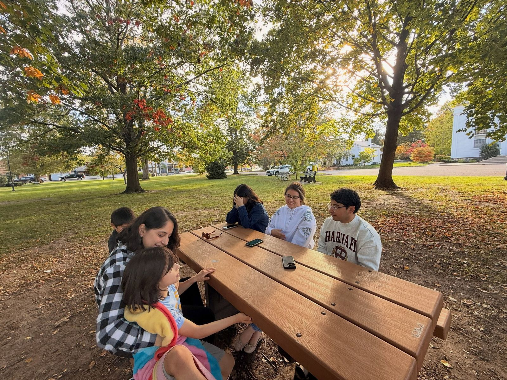

Instituto CESI USA
Formamos plantadores de iglesias
CESI entrena a los que van a plantar. Nuestro Campus Michigan forma plantadores con el Curso Omega, acompañados por mentores y arraigados en su iglesia local.
Una herramienta probada
El Curso Omega nació para entrenar plantadores en Rusia después de la caída del Muro de Berlín, y de ahí llegó a las Américas. Sin afiliación denominacional, ha formado a cientos de plantadores en docenas de países y distintos continentes.
CESI lo inició el padre de Ezequiel en la Ciudad de México. Hoy el Campus Michigan continúa esa misma escuela, ahora en inglés y español.

Cómo funciona
Formación con los pies en tu iglesia
- 1
Estudia por módulos
Un recorrido ordenado por la Biblia, la vida del plantador y la práctica de plantar, a tu ritmo y en tu idioma.
- 2
Camina con un mentor
No estudias solo: un mentor revisa tu avance, ora contigo y te ayuda a aplicar cada módulo.
- 3
Planta y multiplica
La meta no es un diploma: es una iglesia plantada y un plantador capaz de formar a otros.
- Cientos
de plantadores formados con el Curso Omega
- Docenas
de países donde la herramienta ha dado fruto
- Varios
continentes alcanzados por la misma formación
- Michigan
nuestro campus, para la iglesia hispana y bilingüe
Lo que has oído de mí ante muchos testigos, esto encarga a hombres fieles que sean idóneos para enseñar también a otros.
Inscripción
Solicitud de inscripción: Campus Michigan
Si Dios te está llamando a plantar, o tu pastor ve ese llamado en ti, llena la solicitud. La revisamos personalmente y te contactamos para conversar. Tu pastor deberá enviar una carta de recomendación a ezequiel@movilizar.me o al WhatsApp +1 269 501 5834.